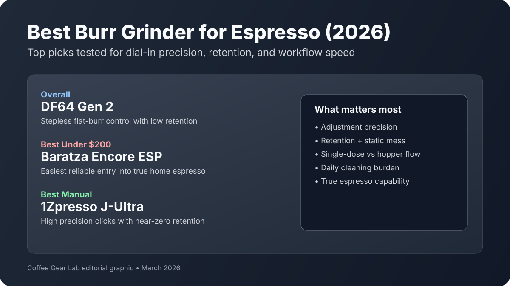

Best Burr Grinder for Espresso (2026): 7 Top Picks Tested
The best burr grinder for espresso is the one that lets you dial in quickly without wasting beans every morning. We ranked seven top options by shot consistency, adjustment precision, retention/static behavior, and cleanup load so you can match your grinder to your workflow and budget.

Quick answer: For most home users, DF64 Gen 2 is the best burr grinder for espresso because its stepless control and low-retention design make dialing in faster and more repeatable. If your budget is tighter, Baratza Encore ESP is the safest under-$200 pick; for manual grinding, 1Zpresso J-Ultra is the standout.
TL;DR winners
Best overall: DF64 Gen 2
Best under $200: Baratza Encore ESP
Best stepless value: Turin SK40
Best low-retention single-dose: Niche Zero
Best manual espresso-capable: 1Zpresso J-Ultra
Comparison table
Prices checked: March 2026
| Product | Best for | Burr geometry | Burr size (mm) | Adjustment style | Dosing workflow | Retention/static behavior | Espresso capability | Cleanup effort | Price band | Check price |
|---|---|---|---|---|---|---|---|---|---|---|
| DF64 Gen 2 | Best overall espresso value | Flat | 64 | Stepless | Single-dose | Low — short chute + bellows keep exchange minimal | Prosumer | Medium | $$$ | Check price |
| Baratza Encore ESP | Best under $200 | Conical | 40 | Stepped | Hopper | Medium — manageable with light purge in dry weather | Strong | Low | $$ | Check price |
| Turin SK40 | Best stepless value | Conical | 40 | Stepless | Single-dose | Low — bellows workflow keeps retention tight | Strong | Medium | $$ | Check price |
| Baratza Sette 270 | Best fast dial-in hopper grinder | Conical | 40 | Macro + micro stepped | Hopper / timed | Medium — low grind path retention, modest static control needed | Strong | Medium | $$$ | Check price |
| Fellow Opus | Best compact crossover pick | Conical | 40 | Micro-stepped | Hopper | Medium — low retention, occasional static popcorning | Entry | Medium | $$ | Check price |
| Eureka Mignon Specialita | Best quiet morning grinder | Flat | 55 | Stepless | Timed hopper | Medium — low static, moderate exchange in chute | Prosumer | Medium | $$$ | Check price |
| 1Zpresso J-Ultra | Best manual espresso precision | Conical | 48 | Micro-stepped | Single-dose (manual) | Low — near-zero retention, almost no static | Strong | Low | $$ | Check price |
How we evaluate
We score grinders on brew quality, grinder consistency, usability, cleaning burden, and value for money. Espresso picks get extra weighting for micro-adjustment control, retention/static behavior, and how quickly the grinder lets you recover when a shot runs fast or chokes.
Product picks by buyer intent
1) DF64 Gen 2 — Best Overall Burr Grinder for Espresso
Why this pick: It gives prosumer-level flat burr shot quality and stepless control at a price that undercuts many premium grinders.
Buy this if... you want the clearest upgrade path without jumping to ultra-premium grinder pricing.
Skip this if... you prefer a hopper-and-go routine over single-dosing.
Dial-in behavior: Fast and precise; tiny collar moves produce predictable shot-time changes.
Pros
- 64 mm flat burr platform gives high clarity and strong espresso separation.
- Stepless adjustment makes fine tuning easier than stepped grinders.
- Single-dose workflow keeps bean freshness and recipe control tight.
Cons
- Learning curve is steeper for first-time espresso users.
- Bellows routine adds one more step per shot.
Key specs: Flat burr · 64 mm · stepless · single-dose workflow · Espresso capability: Prosumer.
Retention/static note: Retention stays low with one bellows pulse; static is usually minor outside very dry climates.
2) Baratza Encore ESP — Best Burr Grinder for Espresso Under $200
Why this pick: It is the easiest true espresso-capable grinder to recommend for budget-focused home setups.
Buy this if... you need reliable espresso control under $200 with simple maintenance.
Skip this if... you want stepless micro-control for very narrow shot targets.
Dial-in behavior: Very beginner-friendly; 1-click moves are obvious and repeatable.
Pros
- Strong value for real espresso range in the budget tier.
- Widely supported platform with easy parts access.
- Works for filter and espresso in one footprint.
Cons
- Stepped adjustment can feel coarse for picky light-roast espresso.
- Louder motor than premium quiet grinders.
Key specs: Conical burr · 40 mm · stepped · hopper dosing · Espresso capability: Strong.
Retention/static note: Moderate retention and static in dry weather; a brief purge keeps daily results stable.
3) Turin SK40 — Best Stepless Value Pick
Why this pick: It delivers stepless-like espresso control at a mid-budget price with genuinely low-retention workflow.
Buy this if... you want single-dose espresso precision without DF64-level spend.
Skip this if... you hate bellows workflows and want timed hopper dosing.
Dial-in behavior: Responsive, but tiny adjustments matter—move the collar slowly.
Pros
- Strong espresso accuracy for the price class.
- Single-dose design cuts stale carryover.
- Compact size works well in tight kitchens.
Cons
- Not as quiet as premium flat-burr machines.
- Fit-and-finish is more functional than luxurious.
Key specs: Conical burr · 40 mm · stepless · single-dose + bellows · Espresso capability: Strong.
Retention/static note: Low retention when bellows are used; static stays moderate with light roasts.
4) Baratza Sette 270 — Best Fast Dial-In Hopper Grinder
Why this pick: It is one of the fastest home espresso grinders to dial in thanks to the macro/micro stepped system and very direct grind path.
Buy this if... you want quick, repeatable shot-time changes without learning a stepless collar.
Skip this if... you want whisper-quiet operation or a pure single-dose workflow.
Dial-in behavior: Very fast—macro steps move broad range and micro steps fine-tune shot time without guesswork.
Pros
- Macro + micro adjustment system is excellent for fast espresso dialing.
- Direct grind path reduces old-ground exchange between shots.
- Strong espresso consistency once your dose and prep are locked.
Cons
- Louder than many modern low-RPM grinders.
- Hopper-first workflow is less ideal for frequent bean swaps.
Key specs: Conical burr · 40 mm · macro + micro stepped adjustment · hopper workflow · Espresso capability: Strong.
Retention/static note: Grind path retention is relatively low for a hopper grinder, but static control still benefits from routine brushing in dry conditions.
5) Fellow Opus — Best Compact Crossover Pick
Why this pick: It offers one of the best small-footprint bridges between espresso experiments and daily filter brewing.
Buy this if... you need one compact grinder for espresso and pour-over on a tighter budget.
Skip this if... you want a straightforward stepless collar with no learning curve.
Dial-in behavior: Can be fussy at first; once you map outer and inner adjustments, it becomes repeatable.
Pros
- Wide grind range for mixed brewing styles.
- Compact body and modern kitchen-friendly footprint.
- Good value relative to espresso range coverage.
Cons
- Dual adjustment logic is not beginner-intuitive.
- Fine grounds can collect around the chute over time.
Key specs: Conical burr · 40 mm · micro-stepped + inner ring · hopper dosing · Espresso capability: Entry.
Retention/static note: Retention is generally low, but static scatter can increase with very light, dry beans.
6) Eureka Mignon Specialita — Best Quiet Burr Grinder for Morning Use
Why this pick: It combines strong flat-burr espresso capability with one of the quieter grinding profiles in this class.
Buy this if... you pull early shots in shared spaces and want less grinder noise.
Skip this if... you want a pure single-dose setup with ultra-low retention by default.
Dial-in behavior: Precise and stable; tiny dial moves are effective once you mark your baseline.
Pros
- Quiet operation compared with many espresso-focused grinders.
- Strong shot consistency from flat burr geometry.
- Timed dosing is convenient for repeated drinks.
Cons
- Retention is higher than purpose-built single-dose grinders.
- Dial reference is less beginner-friendly without your own markings.
Key specs: Flat burr · 55 mm · stepless · timed hopper workflow · Espresso capability: Prosumer.
Retention/static note: Static is low, but chute exchange can hold old grounds unless you purge between big setting changes.
7) 1Zpresso J-Ultra — Best Manual Burr Grinder for Espresso
Why this pick: It delivers high-precision espresso adjustments and top-tier grind quality per dollar if you can handle manual effort.
Buy this if... you want exceptional value and low retention without electric grinder noise.
Skip this if... you make multiple milk drinks back-to-back every morning.
Dial-in behavior: Extremely precise click system; excellent for repeatability once you log settings.
Pros
- Very fine adjustment control for espresso tuning.
- Near-zero retention and excellent portability.
- Outstanding grind quality for the price.
Cons
- Manual grinding at espresso fineness requires effort.
- Less practical for high-volume household use.
Key specs: Conical burr · 48 mm · micro-stepped click adjustment · manual single-dose · Espresso capability: Strong.
Retention/static note: Retention is nearly zero and static is minimal due to direct manual grind path.
Espresso dial-in and workflow guide
Conical vs flat burr in the cup
Conical burrs often produce heavier body and forgiving texture. Flat burrs typically emphasize clarity and separation, which helps when you chase sweeter, cleaner shots from lighter roasts. Neither is universally “better”—the right call depends on flavor preference and your espresso machine consistency.
Stepped vs stepless: what makes dialing in easier
Stepped grinders are easier for beginners because each click is repeatable. Stepless designs allow tighter tuning between shot times. If your target baskets are non-pressurized and you brew multiple beans, stepless usually reduces frustration. For baseline recipes, use our espresso grinder settings guide and the step-by-step espresso shot dial-in workflow.
Retention/static and how much waste to expect
Retention and static decide whether your “same recipe” tastes the same tomorrow. Hopper grinders can hold more exchange in the chute; single-dose grinders usually waste less between bean changes. If cleanup time annoys you, favor low-retention designs and follow our burr grinder cleaning routine.
Single-dose vs hopper workflow for home users
Single-dosing is best when you rotate beans and care about fresh input every shot. Hopper workflows are faster for households that drink the same beans daily. If you are balancing espresso with drip convenience, compare options in our best burr grinder under $200 roundup.
Cleaning/calibration cadence for consistent shots
Brush the chute every few days, deep-clean burrs every 4-6 weeks, and recalibrate after major burr changes. This cadence keeps dial-in behavior predictable and reduces stale carryover. Pairing grinder quality with machine fit matters too, so see our best espresso machine under $200 guide before you buy.
FAQ
Conical vs flat burr: which is better for espresso at home?
Conical burrs are usually more forgiving and body-forward, while flat burrs highlight clarity and separation. For most home users, workflow and adjustment precision matter more than geometry alone.
Do I need stepless adjustment for good espresso shots?
No, but stepless adjustment makes fine tuning easier. A strong stepped grinder like Encore ESP can still produce excellent home espresso, especially with fresh beans and consistent puck prep.
Can a budget burr grinder make real espresso, or only pressurized-basket espresso?
Some budget grinders can make real espresso on non-pressurized baskets, but not all. Models with finer control (Encore ESP, SK40) perform well; coarse-stepped filter grinders are better for pressurized baskets only.
How much does retention/static matter for daily workflow?
It matters a lot. High retention and static increase mess, waste beans during purges, and make back-to-back shots less repeatable. Low-retention grinders feel noticeably faster and cleaner in daily use.
How often should I clean and recalibrate an espresso grinder?
Do light brushing every few days, deep-clean monthly, and recalibrate after burr swaps or major maintenance. Regular cleaning preserves flavor clarity and keeps shot times stable.
Related guides
- Burr Grinder Settings for Espresso (Dial-In Guide)
- Espresso Shot Dial-In Workflow (Fix Sour or Bitter Shots Fast)
- Best Hand Grinder for Espresso Under $100 (2026)
- Best Burr Coffee Grinder Under $200 (2026)
- Best Espresso Machine Under $200 (2026)
- How to Clean a Burr Coffee Grinder
- Best Coffee Scale for Espresso & Pour Over